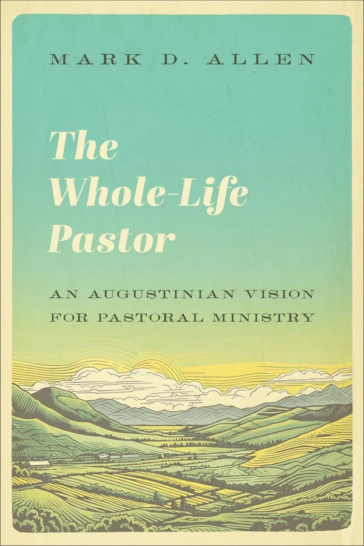
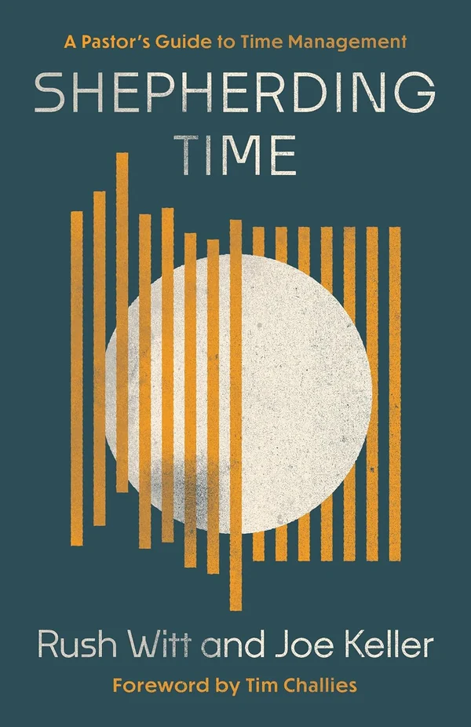

Best New Books for Pastors
Books for the work itself — the sermon on Saturday night, the person across the desk, the calendar that will not hold. These are the new releases we’d actually put in a pastor’s hands.
Every purchase supports independent bookstores.

Ready to Preach
A step-by-step homiletics textbook that assumes you have a sermon due, not a semester free. The best starting point on this list for a young preacher. See the book →

Persuasive Preaching
A 9Marks book on the mechanics of public speaking — clarity, pace, the things nobody teaches in seminary but every congregation feels. See the book →

Pastoral Mentoring
Wilson’s case that formal theological education can only carry a pastor so far, and that the rest is handed on person to person. See the book →

The Whole-Life Pastor
Pastoral theology shaped by Augustine, arguing that ministry is a way of life before it is a set of tasks. See the book →

Pastoring the Whole Person
A research psychologist on what two decades of work reveal about the people in your pews — written for pastors, not clinicians. See the book →

Shepherding Time
Time management for pastors framed as stewardship rather than productivity. Short, practical, and refreshingly free of hustle. See the book →

Spurgeon’s Pastoral Wisdom
Spurgeon on church structure and the trials of ministry, gathered from The Sword and the Trowel. Bracing company for a hard week. See the book →

The Augustinian Pastor
Sherrard weaves Augustine’s life together with his writings to offer pastors a deep well rather than another set of techniques. See the book →